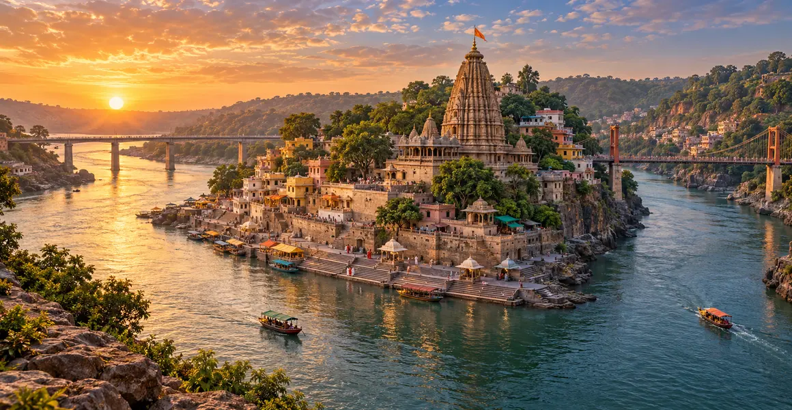

ओंकारेश्वर ज्योतिर्लिंग
ओंकारेश्वर की पवित्र कथा, मंदिर-परंपरा, इतिहास, यात्रा, पूजा और जीवनोपयोगी आध्यात्मिक संदेश की विस्तृत मार्गदर्शिका।
इस मार्गदर्शिका के प्रमुख विषय
पवित्र परिचय
ओंकार अर्थात् प्रणव “ॐ” के ईश्वर। नर्मदा की दो धाराओं से घिरे द्वीप को भक्त ॐ की आकृति से जोड़ते हैं। सामने के तट पर ममलेश्वर या अमलेश्वर मंदिर स्थित है; स्थानीय परंपरा दोनों दर्शनों को एक पूर्ण तीर्थानुभव मानती है।
मुख्य पवित्र कथा
पवित्र कथाओं में विन्ध्य पर्वत की तपस्या तथा राजा मांधाता की भक्ति से इस क्षेत्र को जोड़ा जाता है। कथाओं के संस्करण अलग हो सकते हैं, पर उनका केंद्र अहंकार को तप में बदलना और शिवकृपा को लोककल्याण की ओर ले जाना है।
पवित्र भूगोल और मंदिर
नर्मदा, घाट, पुल, नाव और परिक्रमा-पथ इस तीर्थ की पहचान हैं। जलस्तर, नाव-व्यवस्था और पैदल मार्ग मौसम के अनुसार बदल सकते हैं। परिक्रमा श्रद्धा के साथ, स्थानीय निर्देश और शारीरिक क्षमता का सम्मान करते हुए करनी चाहिए।
यात्रा और आध्यात्मिक संदेश
ओंकारेश्वर सिखाता है कि पवित्र ध्वनि केवल उच्चारण नहीं; वह जीवन को संतुलित करने वाला स्मरण है। नदी की दो धाराओं के बीच एक द्वीप की तरह साधक विविध दायित्वों के बीच भीतर की एकता खोजता है।
पूजा और उत्सव
दैनिक पूजा, आरती, अभिषेक और पर्व स्थानीय मंदिर-परंपरा के अनुसार होते हैं। महाशिवरात्रि, श्रावण और सोमवार को विशेष भीड़ हो सकती है। दर्शन को केवल बाहरी उपलब्धि न बनाकर शुचिता, धैर्य और सेवा से जोड़ें।
इतिहास को समझने की सावधानी
तीर्थ की प्राचीन पवित्रता, पुराण-कथा, क्षेत्रीय लोकस्मृति और वर्तमान भवन का इतिहास एक ही वस्तु नहीं हैं। जहाँ तिथि या संरक्षण का प्रश्न हो, अभिलेख, पुरातत्त्व और सरकारी स्रोत को प्राथमिकता देना उचित है।
उत्तरदायी यात्रा
मध्य प्रदेश के खंडवा जिले में नर्मदा की मांधाता द्वीप-भूमि की यात्रा से पहले आधिकारिक मंदिर या सरकारी पोर्टल पर दर्शन, मार्ग, मौसम, बुकिंग और सुरक्षा-नियम जाँचें। पहचान-पत्र रखें, अनधिकृत एजेंटों से बचें, स्थानीय संस्कृति का सम्मान करें और कचरा न छोड़ें। यह व्यावहारिक सूचना सितंबर 2026 में समीक्षा की गई है।
साधना में धारण करने योग्य संदेश
ओंकारेश्वर की यात्रा का फल तभी स्थायी होता है जब श्रद्धा व्यवहार में उतरे—सत्य, संयम, करुणा, न्याय और प्रकृति के प्रति उत्तरदायित्व के रूप में। ज्योतिर्लिंग का बाहरी प्रकाश साधक को भीतर विवेक का दीप जलाने के लिए प्रेरित करता है।
यात्रा से पहले सत्यापन आवश्यक
मंदिर के समय, बुकिंग, पहुँच, मौसम और सुरक्षा-नियम बदल सकते हैं। यात्रा से ठीक पहले केवल आधिकारिक मंदिर, ट्रस्ट या सरकारी पोर्टल की नवीनतम सूचना देखें।
अक्सर पूछे जाने वाले प्रश्न
ओंकारेश्वर कहाँ स्थित है?
यह मध्य प्रदेश के खंडवा जिले में नर्मदा की मांधाता द्वीप-भूमि में स्थित है।
ओंकारेश्वर यात्रा से पहले क्या जाँचना चाहिए?
दर्शन-समय, मौसम, यात्रा-मार्ग, अधिकृत बुकिंग और मंदिर के वर्तमान नियम जाँचें।
क्या पवित्र कथा और इतिहास एक ही हैं?
नहीं। पवित्र कथा श्रद्धेय धार्मिक परंपरा है; ऐतिहासिक तिथियों के लिए अभिलेख और पुरातात्त्विक स्रोत देखे जाते हैं।
क्या सभी ज्योतिर्लिंग समान रूप से पूजनीय हैं?
हाँ। पारंपरिक क्रम यात्रा और स्मरण की व्यवस्था है; वह किसी ज्योतिर्लिंग को आध्यात्मिक रूप से कम नहीं करता।